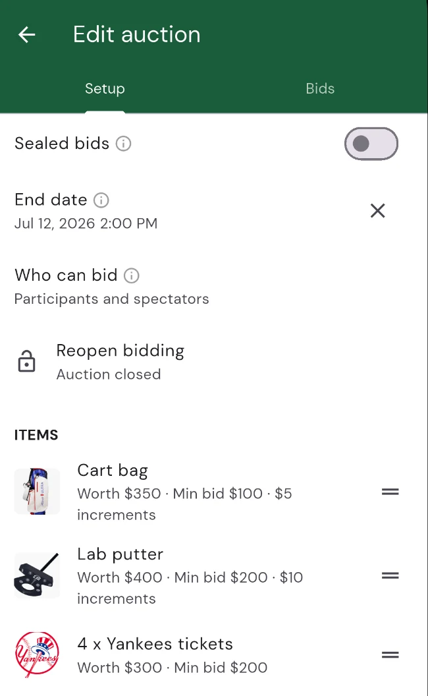

Running a Fundraiser Auction

An auction is one of the easiest ways to turn a golf day into a fundraiser. If you’re hosting a charity scramble or a corporate outing, add an auction to your tournament, load it up with items like signed memorabilia, a round at a nearby course, or a sponsor’s gift basket, and let everyone bid straight from their phone. Squabbit handles the live bidding, keeps the leaderboard honest, and hands you a tidy list of winners to collect from when it’s over. This guide covers it end to end.
Creating an auction
Auctions live inside a tournament. Open your event settings, go to the chip, then tap the auction tile and choose Add auction. That’s all it takes to start: from here you’ll add items and dial in a few settings.
Bids in a Squabbit auction are pledges. No money changes hands in the app while bidding is open. You collect from the winners once the auction closes, which we cover further down.
Adding items
In the auction’s Items section, tap Add item for each thing you’re auctioning off. Each item can include:
- Item name: what’s up for grabs (required).
- Photos: add one or more so bidders can see what they’re bidding on.
- Sponsor: credit the business or person who donated the item. It shows as “Sponsored by” on the item.
- Estimated value: an optional retail value to give bidders a sense of what it’s worth.
- Starting bid: the minimum the first bid can be. Leave it unset to accept any opening amount.
- Bid increment: how much each new bid has to beat the current high bid by.
Add as many items as you like. You can edit or remove an item at any time. If you remove one, any bids already placed on it stay recorded.

Choosing who can bid and when it closes
Who can bid
The Who can bid setting controls who’s allowed to place a bid:
- Participants and spectators: the default. Anyone can bid, including visitors who aren’t in the tournament. Spectators bid with just their name and email, so you can open the auction to a whole gala room, not only the players.
- Participants only: restricts bidding to people who are signed-in members of the tournament.
- Spectators only: restricts bidding to people who are not tournament members.
When it closes
Set an End date and bidding closes automatically at that date and time, in the tournament’s timezone. Prefer to run it live from a stage? Leave the end date unset and use the Close bidding action to end it by hand whenever you’re ready. Either way, if you need to, you can reopen bidding again afterward.
How bidding works
Bidders bid from your event’s home page (more on that widget below) or from a shared item link. In the standard format, each item shows its current high bid and who’s leading, and every new bid has to beat that by the item’s bid increment. Squabbit checks each bid on its servers, not just in the app, so the minimum bid, the increment, whether the auction is still open, and who’s allowed to bid are all enforced. A bid that’s too low or comes in after close is turned away with a clear message.
When someone is outbid, Squabbit notifies them so they can come back and bid again, and the item’s page updates live as bids land. The full bid history for every item stays private to organizers: bidders only ever see the current high bid, never the complete list of who bid what.
Collecting from the winners
When the auction closes, whether on its end date or because you closed it manually, the highest bid on each item wins. Squabbit emails and notifies every winner with instructions on how to pay, usually within a few minutes.
On your side, the auction summary flips to show the total Raised and how many items sold. Open any item to reach its collection panel, which shows the winner, their winning bid, and their contact details. From there you record how they paid and mark the item collected. As you settle each winner, the panel switches from “Owed by” to “Collected from” so you always know who’s still outstanding.

Winners who have a Squabbit account get a balance to settle through the app’s normal payment rails, the same ones used for tournament fees. If you’ve set up card payments through Stripe, they can pay their winning bid by card and it’s confirmed automatically. Winners who bid as spectators without an account are simply marked as collected once you’ve taken their payment in person.
Showing it off: the home widget and sharing
Add the auction widget to your tournament’s Home tab so items and bidding sit front and centre when anyone opens the event. The widget shows your items, takes bids, and displays a live countdown until bidding ends.
You can also share individual items with a deep link. Send the link out by text, email, or social media, and it opens straight to that item so people can bid without hunting for it. It’s a simple way to drum up bids from folks who couldn’t make the event.
That’s it!
Add an auction to your tournament, load it with items and starting bids, decide who can bid and when it closes, and drop the widget on your home tab. Squabbit runs the live bidding and lines up your winners, then hands you a collection panel to settle each one. If you get stuck or want to suggest an improvement, use the Help menu in the app.